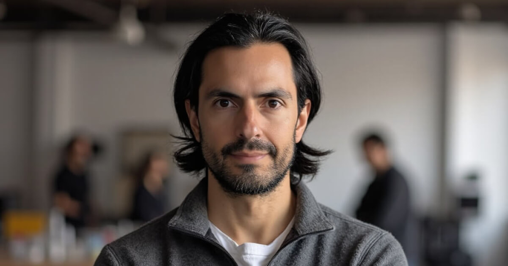

HI Again!
I'm someone who's driven by growth, grit, and exploration, both in work and in life. I’m a lifelong learner who taught myself front-end development and product design out of curiosity and a love for building simple, intuitive experiences from complex problems.
Outside of work, endurance is part of my identity: I’ve run marathons and ultras, helped raise my younger brother with a lot of love and responsibility, and learned to treat hard things as chances to evolve.
Lately, I’ve been bringing that same mindset into my day-to-day work by integrating AI workflows into discovery, research, and prototype building; moving faster, iterating more, and staying close to the problem.
Whether I’m deep in a book, building products, or hiking on a “forest bathing” adventure, I seek experiences that sharpen my thinking and keep me grounded. I’ll take nature over city noise, and complexity over the easy path. I believe the best journeys—professionally and personally—are the ones shaped by leaning into challenge and pushing past comfort.

let's connect